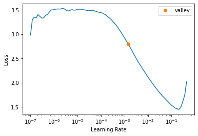

Telecommunication towers component clasification - Part 1. fastai
fastai
deeplearning
Walk with fastai
PyTorch
Author
Francisco Mussari
Published
March 6, 2023
Introduction
The first attempt for developing this idea started as the homework assignment for lesson 1: Deep Learning 2019 (v3) fast.ai course.
For that homework I toke my domain expertise on telecommunication towers to build an image clasifier which could hopefuly recognize different tower components.
I’m running this notebook on an old GTX-1070 NVIDIA GPU.
Import Libraries
from fastai.vision.allimport*import timmimport plotly.express as px
/home/fmussari/mambaforge/envs/fastaiv3/lib/python3.9/site-packages/torchvision/io/image.py:13: UserWarning:
Failed to load image Python extension: libtorch_cuda_cu.so: cannot open shared object file: No such file or directory
Dataset
I curated an image dataset of multiple towers I worked with in the past several years. And choosed 514 images in 8 relatively “easy” to distinguish categories (components).
The dataset was stored in google drive and is shared here.
Local Dataset
For the 2022 course, thanks to the help of many great people in fastai forums, I was able to install fastai locally and to use my local GPU on WSL2.
path = Path("photos")
train_path = path /'train'valid_path = path /'valid'labels = [label.parts[-1] for label in train_path.iterdir()]train_quantity = [len(list(each.iterdir())) for each in train_path.iterdir()]valid_quantity = [len(list(each.iterdir())) for each in valid_path.iterdir()]df = pd.DataFrame()df['label'] = labels *2df['set'] = ['train'] *8+ ['valid'] *8df['quantity'] = train_quantity + valid_quantity
(#514) [Path('photos/train/base_plate/Ac102-Corozopando-(64).jpg'),Path('photos/train/base_plate/Ac102-Corozopando-(75).jpg'),Path('photos/train/base_plate/camaguan-087.jpg'),Path('photos/train/base_plate/camaguan-098.jpg'),Path('photos/train/base_plate/cantv el yoco 015.JPG'),Path('photos/train/base_plate/cantv-capanaparo-011.jpg'),Path('photos/train/base_plate/cantv-cinaruco-018.jpg'),Path('photos/train/base_plate/cantv-cinaruco-025.jpg'),Path('photos/train/base_plate/cartanal-(7).jpg'),Path('photos/train/base_plate/CHUSPITA-II-AC-72-MTS-002.jpg')...]
CPU times: user 27 s, sys: 9.19 s, total: 36.2 s
Wall time: 7min 12s
SuggestedLRs(valley=0.0014454397605732083)

dls.num_workers
1
Note
I experimented by setting dls.num_workers = 4 and it didn’t make any difference in the time it takes to run lr_find(), even though that, by watching at the progress bar, it seemed that the bottleneck was in pre-processing the batch. Not in GPU.
len(dls.train), len(dls.train.get_idxs())
(6, 394)
len(dls.valid), len(dls.valid.get_idxs())
(2, 120)
dls.drop_last
True
Training
%%timelearn.fine_tune(3)
epoch
train_loss
valid_loss
error_rate
time
0
2.751579
0.932106
0.316667
00:44
epoch
train_loss
valid_loss
error_rate
time
0
1.000472
0.463910
0.166667
00:43
1
0.632878
0.272529
0.091667
00:43
2
0.429861
0.208375
0.050000
00:43
CPU times: user 8.31 s, sys: 4.01 s, total: 12.3 s
Wall time: 2min 55s
I took about 500 pictures and 3 epochs to finetune a small pre-trained model to make it recognize 8 components with an error rate of about 6%.
learn.lr_find() took about 5 minutes to run, more that the fine tuning.
There are some categories that normally appear in one picture at the same time. I solved a classification problem to simplify, but maybe the actual problem should be a multi-class classificacion.